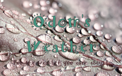
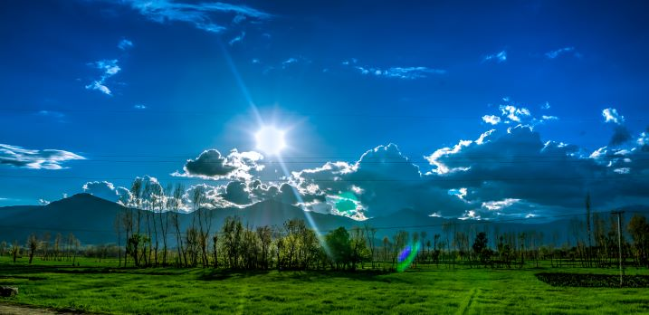

Odom's Weather Site
For the weather you actually care about!
Menu
Home
Preston
Soda Springs
Fish Haven
Storm Center
Gallery

The Town of Preston
Weather Summary
Currently:
Partly Coudy
Partly Cloudy
Temperature:
62 °F
Humidity:
69%
Precipitation:
0 inches
Wind Speed:
5 mph
7 Day Outlook
Day 1
Day 2
Day 3
Day 4
Day 5
Day 6
Day 7
62°F
69°F
61°F
55°F
50°F
47°F
47°F
Fall Foliage Festival
by Leslie Leaf